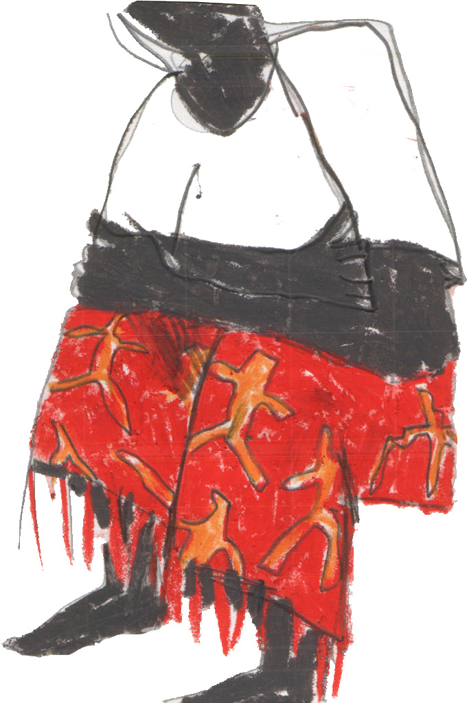

Mladi filozof je postao kamen.
Šutirali su, gazili i pljuvali po njemu
jer nisu znali da tu ima nekog.
Čak se i jedan ker ispišao na njega.
Po prvi put nije razmišljao ništa
ali i dalje je postojao, možda više nego ikad.
Otišle su misli i radnje što ne vode nikud.
Praznuvstvovao je dugo ne osećajući se ničim.
Trgao se, ustao je naglo
i raspao se u parampardčad.
A kamen je i dalje stajao tamo.
Mladi filozof je postao kamen.
